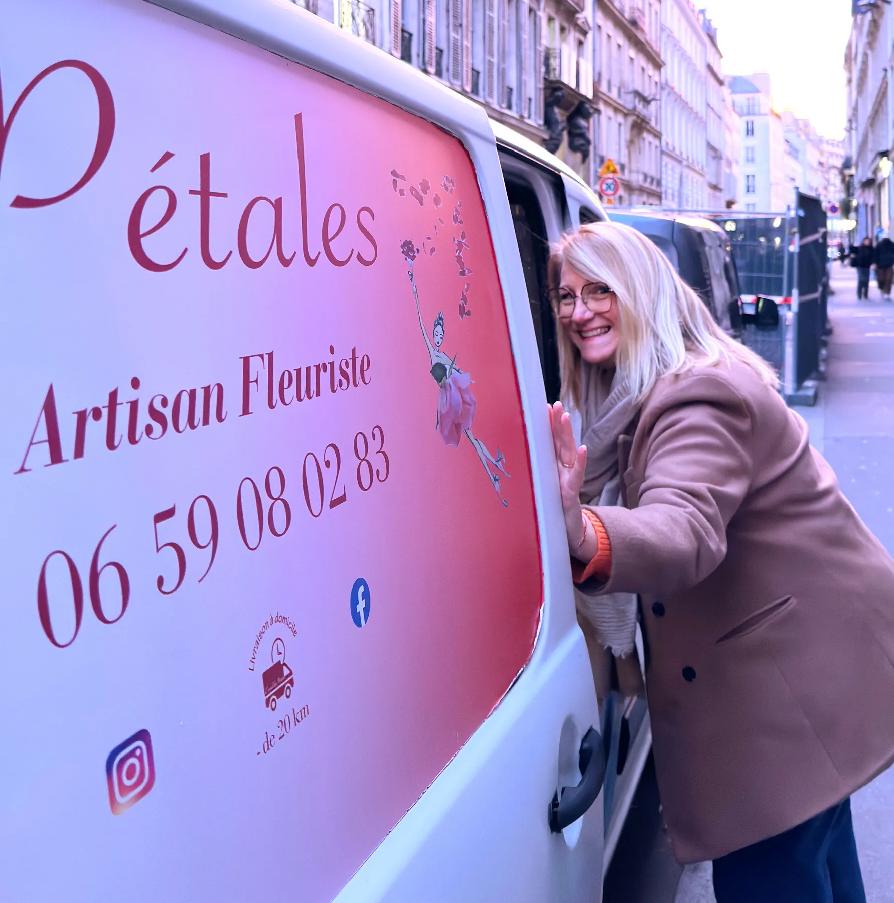
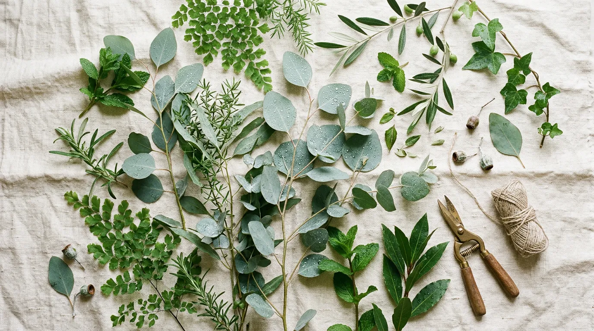
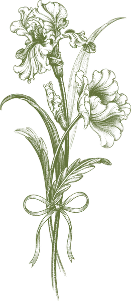
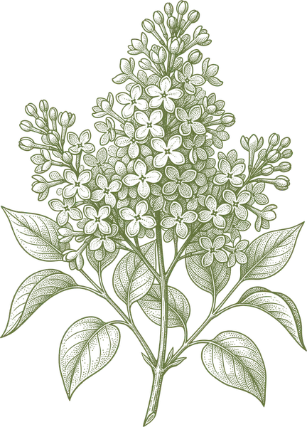

L'histoire d'une passion devenue métier

À 46 ans, Sandrine a fait le choix courageux de tout changer. Après des années dans un métier qui ne la faisait plus vibrer, elle a écouté son cœur et suivi sa passion de toujours : les fleurs.
Formée auprès d'artisans fleuristes et de maîtres d'art floral, elle a créé L'Envol des Pétales avec une conviction : chaque bouquet doit raconter une histoire, porter une émotion, toucher le cœur de celui qui le reçoit.
Installée entre Serris et Roissy-en-Brie en Seine-et-Marne, Sandrine travaille seule, à domicile, avec amour et minutie. Pas de boutique physique, pas d'intermédiaire : juste elle, ses mains et sa créativité, au service de vos plus belles émotions.
Chaque composition est réalisée sur commande, avec des fleurs fraîches de saison, sélectionnées auprès de producteurs français engagés dans une démarche éco-responsable.
Ce qui guide chaque création
Chaque bouquet, chaque composition, chaque bougie est réalisé(e) entièrement à la main par Sandrine. Pas de production en série, que de l'amour et du soin.
Sandrine prend le temps d'écouter, de comprendre vos envies et de vous conseiller. Chaque échange est personnel, chaleureux et bienveillant.
Fleurs de saison, producteurs français, circuits courts, emballages recyclés... Sandrine s'engage pour une floriculture respectueuse de la planète.
Sandrine privilégie les producteurs locaux et français. Des fleurs qui n'ont pas fait le tour du monde, pour un bouquet aussi frais qu'engagé.

Pas de catalogue rigide ni de « bouquet numéro 12 ». Chaque création naît d'un échange avec vous : vos goûts, l'occasion, la personne qui recevra les fleurs, les couleurs qui vous parlent…
Sandrine ne se contente pas d'assembler des fleurs : elle compose des émotions. Petit bouquet pour dire « je pense à toi » ou décoration complète d'un mariage, chaque détail compte.
Parce qu'elle travaille seule, chaque client bénéficie d'une attention totale et d'un suivi personnalisé. Pas de file d'attente, pas de standardisation : juste de l'artisanat, du vrai.


Les fleurs ont ce pouvoir magique de dire ce que les mots n'osent pas. Mon métier, c'est de traduire vos émotions en pétales.
Que ce soit pour un bouquet, un événement ou simplement une question, Sandrine sera ravie d'échanger avec vous.
Contacter Sandrine